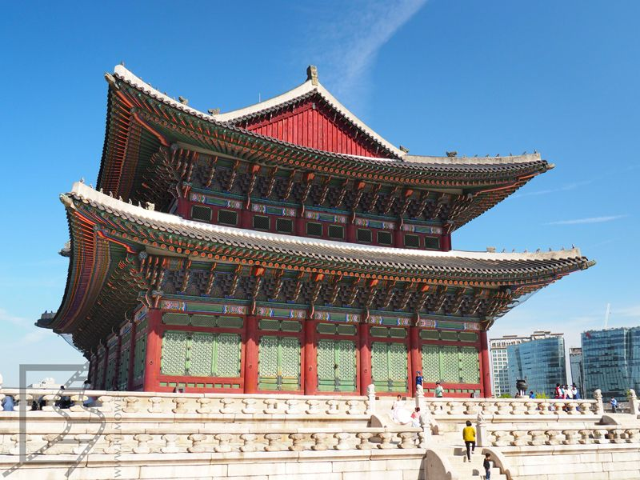
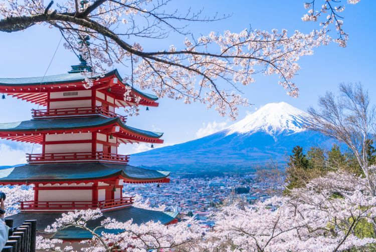
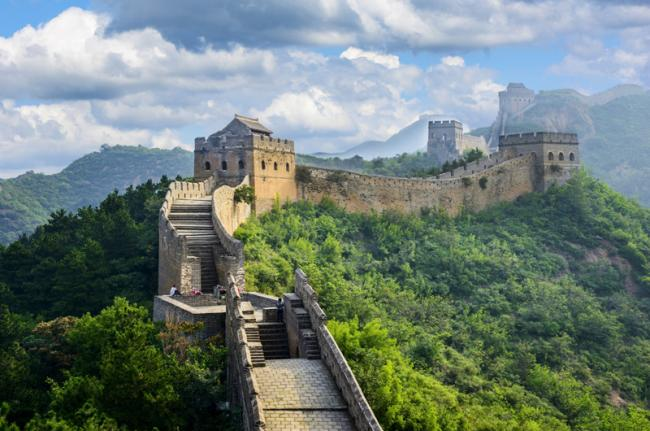

Busan, Corea del Sur

La «Ciudad Metropolitana de Busan» (부산광역시) es la primera ciudad portuaria de Corea del Sur, ubicada al sudeste de la península coreana.
Reconocida como la segunda ciudad del país, destaca por sus playas, montañas y templos, sus importantes sitios históricos y culturales y sus modernas áreas comerciales.
A una hora de vuelo desde Seúl, es posible disfrutar de la variada gama de atracciones con las que cuenta la ciudad.
Kioto, Japón

Kioto, que alguna vez fue la capital de Japón, es una ciudad de la isla de Honshu. Es famosa por sus numerosos templos budistas clásicos y sus jardines, palacios imperiales, santuarios
Shinto y casas de madera tradicionales. También es conocida por tradiciones formales, como las comidas kaiseki, que constan de varios platos de preparaciones distintivas,
y las geishas, artistas femeninas que se encuentran comúnmente en el distrito Gion.
La gran muralla, China

El centro de Beijing está a pocos kilómetros de lo que es sin duda una de las estructuras históricas más populares del país: la Gran Muralla China.
La parte principal del Muro que se abrió a los excursionistas en la época de 1950, puedes complacerse de un paseo por la sorprendente Muralla creadas en el siglo XVI,
se eleva a unos 8 metros de altura. En el recorrido podrá disfrutar de muchas torres y trincheras que brindan majestuosas vistas del espectacular panorama circundante.
Mientras recorres las colinas, de hecho puede tomar un interesante paseo en teleférico hasta la cima.
New York

Es que es una ciudad que siempre te sorprenderá, en la Gran Manzana cada día siempre hay algo nuevo que hacer,
es una ciudad en donde puedes compartir con diferentes culturas dentro de un mismo espacio, es la Ciudad que Nunca Duerme, que nunca para y siempre está en movimiento,
tiene arte, museos, los rascacielos, el Skyline de Nueva York, central Park, la noche neoyorquina y es la capita de la moda